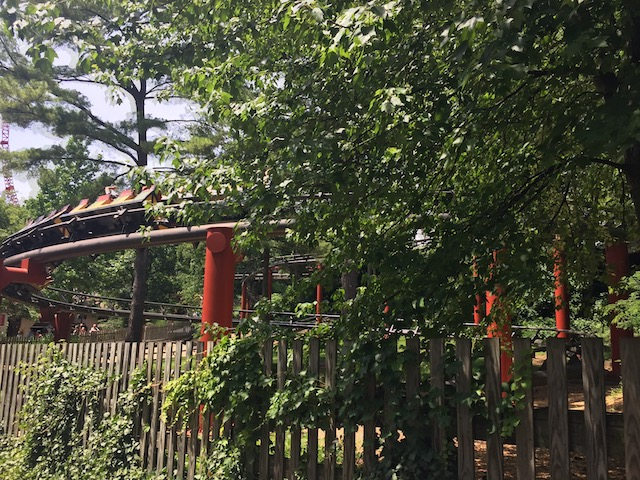
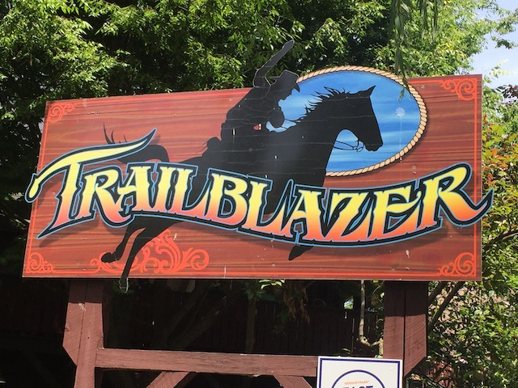

| |
Trailblazer Review

We're here at Hersheypark. Today's ride we'll be reviewing for you is Trailblazer. After getting in the cars, you dip out of the station and turn into a shed. It is a little cool to be in the shed. But I definetly feel that if they made it a complete tunnel, it would be a lot better. We then turn up into the lifthill. We then head into some straight track before heading into a downward helix. It's kind of like a ride on Westcoaster, only without being at the Stupid Santa Monica Pier. We don't gain very much speed from that helix, then again, we don't gain very much speed on this ride at all. We then head for more straight track. If it wern't for looking at Storm Runner, we'd probably be asleep right now. We then head into a left turn and go through a small bump. Since we had no speed going into the bump, there was no speed to be lost. But there are absolutely no forces whatsoever on that bump. We then crawl through some straight track that is supposed to be a mid course brake section. But as I said earlier, we don't have any speed left to lose. We then head into a tiny curved drop, only to rise out of it and into some straight track. We then head into the final helix. I know that this final helix on Trailblazer is supossed to be that fun finale that is featured on many mine trains such as Cedar Creek Mine Ride and Goldrusher. However, unlike on those two mine trains, the final helix is boring as hell and you don't gain ANY speed. Then you rise up through some curve. Then you go through a shed and into the brake run. I know that this is a mine train and not supposed to be intense and all, but Trailblazer is a f*cking sleeping pill. I mean, most kiddy coasters I've ridden are more fun than this. OK. That's a bit of an exxageration. But it's still by far, the worst Mine Train. This is totally the Abyss of Mine Trains. I would ONLY recommend riding this if you have never ridden a coaster before or are a HARDCORE credit whore.
3/10
Location: Hersheypark
Opened: 1974
Built by: Arrow
Last Ridden: June 25, 2021
Trailblazer Photos



Home
|